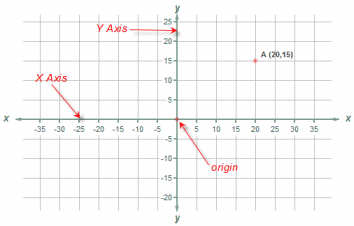
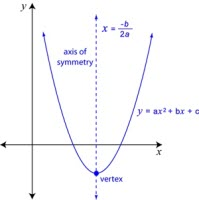
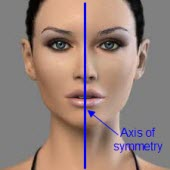
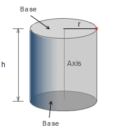
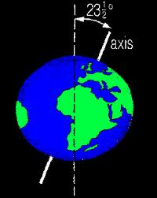

The coordinate plane is organized around two axes: the x-axis running horizontally, and the y-axis running vertically. The position of a point on the plane is described by two numbers that measure the distance from the point to these two reference lines. See Coordinates of a point

This is a line about which a shape is symmetrical. That is, the shape on one side of the line is a mirror image of the shape on the other. The shape could be the graph of a function or a physical object. On the left below we can see that a parabola (graph of y=ax2+bx+c) has a vertical line of symmetry running through its vertex. On the right, a photo of a face has an axis of symmetry down the center.
 |
 |

The axis of a solid is an imaginary line passing through the solid, about which the object is symmetrical. For example the axis of a cylinder runs between the centers of end end (base).A way to think about this is if you rotate the cylinder about the axis it would rotate smoothly, without any wobble. If you could not see any pattern on the surface you would have trouble seeing it was rotating at all. For more see Definition and properties of cylinder

A line about which a solid object rotates. The earth is a solid that rotates once per day around a line through the North and South pole. This is its axis of rotation and runs through the center of the earth.
(As it happens, the earth's rotational axis is not vertical. It leans over an angle of about 23.5°, and it is this tilt that produces the four seasons. The animated image below shows the axis as vertical however.)